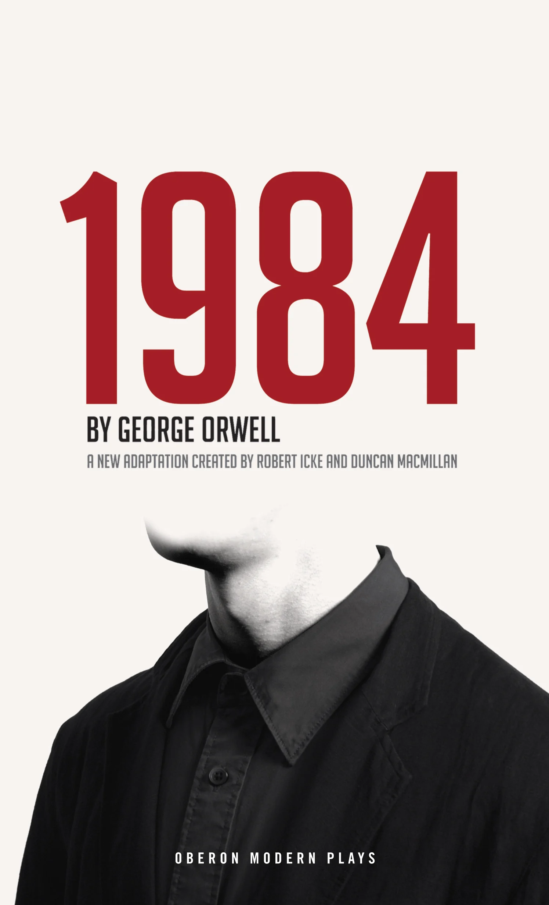

📖 I-Qism. VII-Bob
Savollar sonini belgilang
Boshlang'ich raqamni tanlang

Qaysi funksiyani xohlaysiz?
Quiz testlar
Quiz aralash
Yopiq savol-javob
Yopiq savol-javob aralash
I-Qism. VII-Bob
3
Yuklanmoqda...
Testni yakunlash